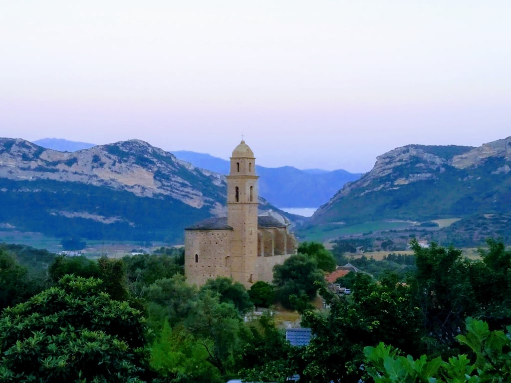

A Col de Teghime a korzikai ellenállás és a sziget felszabadításának legmeghatározóbb, egyben legfájdalmasabb történelmi mementója. 1943 októberében, miután Korzika népe fellázadt a megszállók ellen, ezen a stratégiai fontosságú hegyi hágón zajlott le a döntő ütközet a szigetről visszavonuló, elszántan védekező német csapatok és a szövetséges erők között. A csata nehézségét a kíméletlen hegyi terep és a zord időjárás adta. A győzelmet végül a francia hadsereg kötelékében harcoló marokkói goumier katonák (szabadcsapatok) elképesztő, hősies és önfeláldozó rohama döntötte el, akik kézitusában, szikláról sziklára nyomulva törték meg a német védelmet, megnyitva az utat Bastia végső felszabadítása előtt. A hágón emelt monumentális emlékmű és a katonai temető az ő elévülhetetlen érdemeik előtt tiszteleg.
Hadászati jelentőségén túl a Col de Teghime földrajzilag is a sziget egyik legizgalmasabb pontja, ugyanis ez a hágó képezi a természetes határvonalat Bastia nyüzsgő tengerparti síksága és a Saint-Florent-i öböl, valamint a Cap Corse félsziget bázisa között. Az 536 méteres magasságban húzódó gerinc tökéletes és fenséges rálátást biztosít a sziget domborzati kontrasztjaira. Az utak meredek kanyarokkal kapaszkodnak fel a kopár, szeles sziklák közé, ahol a mediterrán maquis cserjések illata keveredik a magaslati, tiszta hegyi levegővel, felejthetetlen autós vagy motoros élménnyé téve az átkelést.
A hágó tetőpontjára érve az utazót a sziget egyik legpazarabb és legkülönlegesebb vizuális élménye fogadja: a ritka kettős tengeri panoráma. Kelet felé tekintve Bastia városa, a nyüzsgő kikötő, a hatalmas Biguglia-lagúna és a horizonton elterülő Tirrén-tenger látványa bontakozik ki, amely tiszta időben az olasz toszkán szigetvilág körvonalaival egészül ki. Ha megfordulunk, nyugati irányban a Saint-Florent-i öböl türkizkék, szelíd víztükre, az Agriates sivatag vad partvonala és a Ligur-tenger hullámai tárulnak elénk. Ez az egyedülálló, kétoldali kilátás teszi a Col de Teghime-t egyszerre a mély főhajtás és a lenyűgöző természeti csodálat helyszínévé.